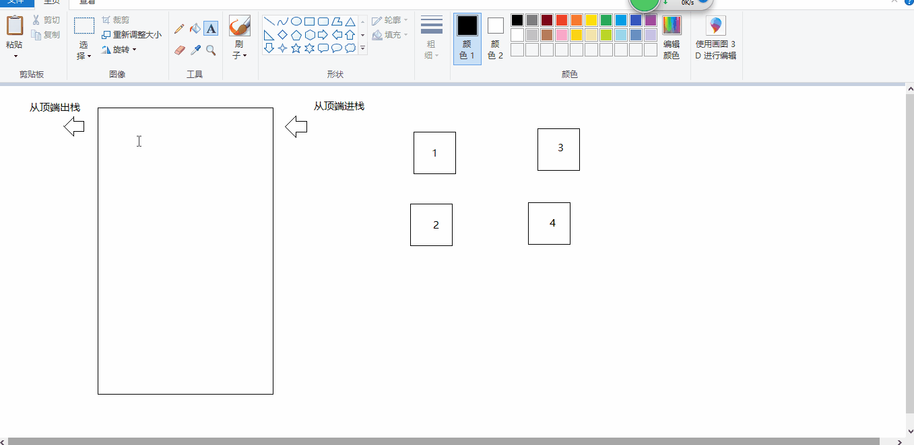
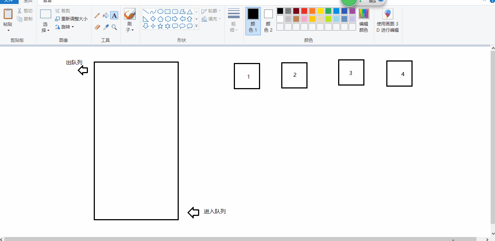

同步异步编程
同步异步编程
进程/线程
1 | 1. 进程代表一个程序 (浏览器开一个页卡就是一个进程) |
异步编程有哪些
1 | 定时器 ajax/Fetch/跨域(HTTP网络请求) 事件绑定 Promise Generator yeild async await |
底层机制
计算程序执行事件(预估)
1 | //大O表示法 提前预估的方法 O1 < O |
定时器的异步编程
1 | // 首先设置定时器任务是同步的 间隔 interval这么长时间 执行定时器绑定的函数(这个任务是异步的) |
异步任务执行机制
1 | 1. 首先我们都是在代码执行的时候 会开辟一个栈内存 代码执行生成上下文(EC(G)) 然后由渲染进程去执行这段代码 |
1 | //实例 |

1 | 以上代码解析 |
基础数据结构之队列和栈
栈结构
1 | 1. 栈结构(LIFO last in first out)的特点 先进后出 或者 后进先出 |

实现一个栈结构
1 | 1. 以后创建一个栈 就是创建一个栈的实例 |
1 | class Stack { |
十进制转二进制
1 | 1. Number.prototype.toString('进制数') 可以取的转换后的进制数 |
1 | // 短除法 比如求 63 的 二进制 |
1 | // 我们利用短除法 写代码 |
队列结构
1 | 1. 队列结构 和我们的栈结构相反 是先进先出 分进入队列 和移除队列 |

1 | // 队列类 |
1 | // 比较优先级 |
击鼓传花
1 | N 个人一起玩游戏 围成一圈 从 1 开始数树 数到M的人 自动淘汰 最后剩下的人 会取的胜利 问最后剩下的是谁 |
1 | // 原理 |
1 | function game (n,m) { |


公告
感谢访问本站，如喜欢请收藏。本站主要分享前端知识，立志成为资深前端工程师，但目前是一个前端界的小学生 若喜欢可以打赏请博主喝一杯冰阔落
另外请大家多多支持淼哥的开源项目
https://github.com/flipped-aurora/gin-vue-admin
🌟🌟欢迎大家start 🌟🌟
欢迎加入博主的前端技术交流群